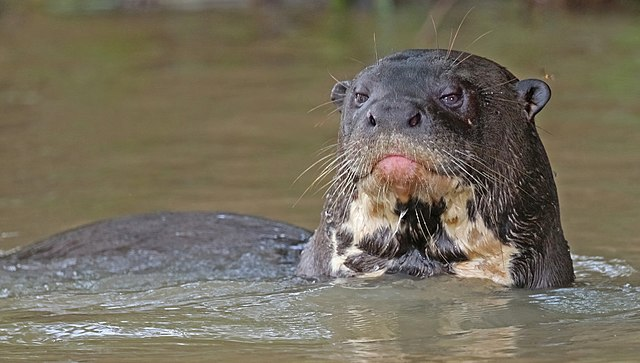

Sobre:
A ariranha (Pteronura brasiliensis), também conhecida como onça-d'água, lontra-gigante ou lobo-do-rio, é um mamífero semiaquático da família dos mustelídeos, a mesma das lontras. É o maior representante dessa família e um dos maiores carnívoros da América do Sul.
Caracteristicas:
Vamos conhecer esse mamifero subáquatico:- Tamanho e Peso:Pode chegar a 1,8 metros de comprimento e pesar até 30 kg
- Aparência:Corpo alongado, com pelo denso e impermeável, ideal para a vida aquática. Possui patas com membranas entre os dedos, que facilitam a natação. Sua cauda é achatada e funciona como um leme.
- Habtios:Vive em grupos familiares, que podem ter até 20 indivíduos.
- Pelagem:Geralmente marrom-escura, com uma mancha amarela no pescoço.